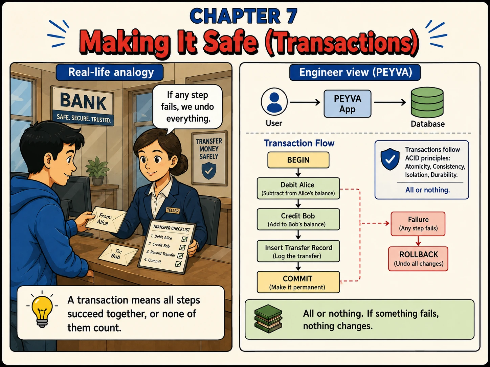

Chapter 7
Making It Safe (Transactions)
A transfer is three writes, not one, and all three need to succeed together.

1. What
- Transaction. A group of database changes that succeed or fail together, never partially.
- BEGIN / COMMIT. Marks the start and the permanent end of a transaction. Nothing is final until COMMIT.
- Rollback. Undoing every change in a transaction because one step failed.
- ACID. Atomicity, Isolation and Durability are what the database provides. Consistency is your invariants, which the database cannot know.
- Isolation Level. How much one running transaction can see of another. Serialisable means the outcome equals some one-at-a-time ordering; weaker levels each permit named anomalies.
- Lost Update. Two transactions read the same balance, each subtracts from what it read, and one's subtraction vanishes. Atomicity alone does not prevent it.
- Ledger. The append-only record of every movement of money, the proof behind each balance the Vault reports.
2. Why
- A payment is three writes: debit, credit, record. A crash between any two creates, destroys or hides money.
- The database gives you atomicity, isolation and durability. Consistency is your invariant; it will commit a negative balance if asked.
- Two payments that both read 100 and both debit 60 leave alice at 40 with 120 spent. That is a lost update, inside two atomic transactions.
- The fix is serialisable isolation or a lock, so the check and the debit are one unit. SQLite gets this from its single write lock.
- Double-entry: every move is a debit and a matching credit. Entries sum to zero; an account's entries sum to its balance.
- The record is the proof and the balance is derived from it. Nothing edits or deletes an entry; a mistake gets a new entry.
3. Build It Hands-on Building in Go, change in Chapter 0
Chain-of-thought prompting. The failure modes are the hard part here, and thinking first surfaces the hole while it is still cheap.
Documented in The Prompt Report: Thought Generation, Chain-of-Thought
Every prompt below is copied with these rules, about 901 tokens for the chapter
Build this in Go, standard library only.
Code in peyva/<component>/, one folder per component.
Money: exact decimal or integer minor units, never floating point, two decimal places.
The goal and invariants are in peyva/goal.md.
The Portal is plain HTML and CSS. No framework, no build step, no dependencies.
It lives in peyva/portal/. Anything it needs from the server is Go, standard library only.
One customer's wallet at a time, never everyone's at once. A switcher at the top says whose.
New work joins the menu.
The goal and invariants are in peyva/goal.md, the look in peyva/portal/design.md.
The goal and invariants are in peyva/goal.md.
1 of 4 Build~294 tokens
The Teller moves money by updating two balances in the Vault. Nothing records that the movement happened, so if a balance looks wrong there's no way to prove how it got that way. Build the Ledger: an append-only, double-entry record. Every payment writes two balanced entries (a debit and a credit sharing one reference and timestamp), and the Vault's balances update in the same atomic unit. All of it commits, or none of it happened. Before writing code: walk me through what the data looks like if the process dies between the debit, the credit, and the Ledger write. Three scenarios, and for each tell me exactly who is owed what. Then make those states unreachable, and tell me which of your three scenarios is still possible afterwards, if any. Done when a completed payment leaves two balanced Ledger entries and updated balances, a forced mid-payment failure leaves neither, and summing alice's Ledger entries equals her Vault balance.
2 of 4 Isolation~304 tokens
The Teller checks that the payer has enough and then debits them, inside one transaction. Before changing anything, reason through this: two payments from alice of 60 each arrive at the same instant, and she holds 100. Walk through the interleaving where both read 100, both decide 60 fits, and both debit. Say what her balance is afterwards, whether the Ledger and the Vault still agree, and which invariant in goal.md was broken. Then tell me which isolation level, or which lock, the database you are using applies to that transaction, and whether it prevents that interleaving. Do not assume; find out from the database's own documentation or by testing it. Then fire those two payments concurrently, for real, and show me the result. If the second one is not refused, fix it so the read and the debit are one unit, and run it again. Done when two concurrent 60s from a balance of 100 leave exactly one applied, one refused, alice at 40, and the Ledger summing to her balance.
3 of 4 Decide~113 tokens
A customer's wallet page shows a balance and can send money. I want to add a history: every movement in and out of their own account. Before building it, walk me through what that view should show for a payment that failed halfway. Should it appear at all? If it should, how does a customer tell it apart from one that worked? Done when I know what a half-failed payment looks like on the page, and why.
4 of 4 Portal~190 tokens
The Portal shows a balance and can send money, and says nothing about how the balance came to be what it is. Add History to the menu: every movement in and out of the customer's own account, newest first, each with its reference, amount and the other party. Show a failed payment the way you just described. Done when History explains alice's balance without me reading the database.
Quick tip: Nothing is final until COMMIT. That's what makes ROLLBACK possible.